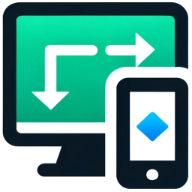

PeerJS Examples Launcher
First Peer
ID
Name
Peer() autorun
Connection autorun
Second Peer
ID
Name
Peer() autorun
Connection autorun
Examples
User-generated short messages
Speed and connection test (automatically generated text messages of a given length)
Video
Face Landmarks (MediaPipe lib.)
Start Examples in New Windows
Both Peers
First Peer
Second Peer